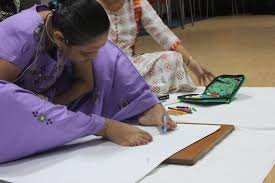

English

Ila Sachani, a talented Kathiawar embroidery artist, overcame physical challenges to excel in her craft.With unwavering family support, particularly from her mother and grandmother, Ila mastered threading needles and various embroidery techniques. Her initial creations, crafted for family and friends, garnered local admiration and soon attracted wider recognition. Her exceptional talent led to her work being showcased at state exhibitions, notably in Surat, where she received significant acclaim. Ila's skills were recognized at a state exhibition, leading to national recognition and awards.Her journey from a farmers daughter to a celebrated artist highlights resilience and determination.Through her art, Ila found independence, joy, and success, proving that challenges can be overcome with hard work. she exhibited remarkable determination by teaching herself the intricate art of traditional Kathiawar embroidery using her feet. Ila's legacy continues to inspire, reminding us that with determination and support, one can overcome obstacles and achieve remarkable success.